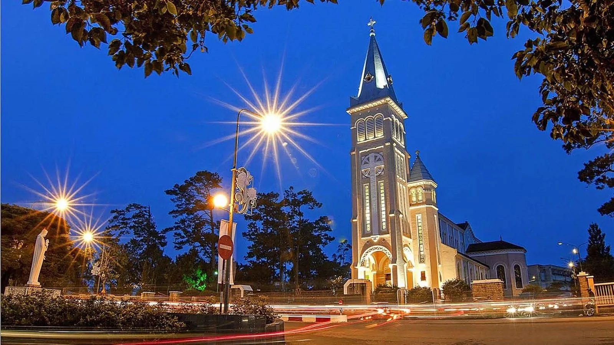

Quảng trÆ°á»ng Lâm Viên - Biểu tượng Ä‘á»™c đáo giữa lòng Äà Lạt

Mục lục bà i viết
- 1. Quảng trÆ°á»ng Lâm Viên – Biểu tượng rá»±c rỡ giữa lòng Äà Lạt
- 2. HÆ°á»›ng dẫn di chuyển đến Quảng trÆ°á»ng Lâm Viên Äà Lạt
-
3. Review Quảng trÆ°á»ng Lâm Viên có gì hấp dẫn?
- 3.1. Nụ hoa Atiso – Biểu tượng ấn tượng & Ä‘iểm check-in huyá»n thoại
- 3.2. Khối hoa Dã Quỳ – Công trình kiến trúc nổi báºt
- 3.3. Äà i phun nÆ°á»›c nghệ thuáºt lung linh vỠđêm
- 3.4. Trung tâm sá»± kiện & lá»… há»™i văn hóa lá»›n của Äà Lạt
- 3.5. Khu vui chơi – giải trà sôi động, không gian lý tưởng cho cả gia đình
- 4. Quảng trÆ°á»ng Lâm Viên vỠđêm – Vẻ đẹp rá»±c rỡ khó cưỡng
- 5. Những quán cà phê đẹp gần Quảng trÆ°á»ng Lâm Viên Äà Lạt
- 6. Gợi ý quán ăn ngon gần Quảng trÆ°á»ng Lâm Viên Äà Lạt
- 7. Những địa Ä‘iểm du lịch hấp dẫn xung quanh Quảng trÆ°á»ng Lâm Viên
- 8. Gợi ý ẩm thá»±c gần Quảng trÆ°á»ng Lâm Viên
Khi đến vá»›i Quảng trÆ°á»ng Lâm Viên, bạn sẽ có cÆ¡ há»™i trải nghiệm hà ng loạt hoạt Ä‘á»™ng giải trà thú vị nhÆ° thả diá»u, trượt patin, chÆ¡i ô tô đụng… Ngoà i ra, bạn cÅ©ng có thể dừng chân tại các quán nÆ°á»›c hay thưởng thức bánh tráng nÆ°á»›ng bên lá» quảng trÆ°á»ng, vừa nhâm nhi vừa ngắm nhìn khung cảnh thÆ¡ má»™ng của Hồ Xuân HÆ°Æ¡ng và không gian rá»™ng lá»›n, xanh mát nÆ¡i đây.

Khi đến vá»›i thà nh phố Äà Lạt má»™ng mÆ¡, du khách chắc chắn sẽ không thể bá» qua Quảng trÆ°á»ng Lâm Viên – má»™t trong những công trình kiến trúc Ä‘á»™c đáo và biểu tượng nổi báºt của “thà nh phố ngà n hoaâ€. Váºy Quảng trÆ°á»ng Lâm Viên nằm ở đâu và có gì đặc biệt thu hút đông đảo ngÆ°á»i dân cÅ©ng nhÆ° khách tham quan? Hãy cùng khám phá chi tiết trong bà i viết dÆ°á»›i đây!
1. Quảng trÆ°á»ng Lâm Viên – Biểu tượng rá»±c rỡ giữa lòng Äà Lạt
Äịa chỉ: ÄÆ°á»ng Trần Quốc Toản, PhÆ°á»ng 1, TP. Äà Lạt, tỉnh Lâm Äồng
Giá vé tham quan: Miá»…n phÃ
Tá»a lạc ngay trung tâm thà nh phố, Quảng trÆ°á»ng Lâm Viên là má»™t trong những Ä‘iểm check-in nổi tiếng và thu hút hà ng đầu tại Äà Lạt. Công trình bắt đầu được xây dá»±ng từ năm 2009 và sau 6 năm thi công, đến năm 2016, quảng trÆ°á»ng chÃnh thức mở cá»a phục vụ ngÆ°á»i dân và du khách.
Äiểm nổi báºt tạo nên sức hút của nÆ¡i đây chÃnh là thiết kế kiến trúc Ä‘á»™c đáo và hiện đại, nổi báºt vá»›i nụ hoa Atiso bằng kÃnh khổng lồ, bông hoa Dã Quỳ cách Ä‘iệu, cùng khu trung tâm thÆ°Æ¡ng mại, nhà hát và khu giải trà dÆ°á»›i tầng hầm. Quảng trÆ°á»ng được quy hoạch vá»›i tổng diện tÃch hÆ¡n 72.000m², đủ sức chứa tá»›i 60.000 ngÆ°á»i cùng lúc – là nÆ¡i thÆ°á»ng xuyên diá»…n ra các sá»± kiện lá»›n của thà nh phố nhÆ° Festival Hoa Äà Lạt, các chÆ°Æ¡ng trình ca nhạc, thể thao và các hoạt Ä‘á»™ng cá»™ng đồng sôi Ä‘á»™ng.
Không chỉ là không gian lý tưởng để dạo chÆ¡i và thÆ° giãn, Quảng trÆ°á»ng Lâm Viên còn nổi tiếng vá»›i hà ng loạt góc sống ảo chất lừ. Dù chụp ở bất kỳ góc nà o, bạn cÅ©ng dá»… dà ng sở hữu những bức ảnh Ä‘áºm chất Äà Lạt má»™ng mÆ¡, rất phù hợp vá»›i giá»›i trẻ yêu thÃch du lịch và đam mê nhiếp ảnh.
Vá»›i giá vé hoà n toà n miá»…n phà và vị trà thuáºn tiện, đây là điểm đến không thể bá» lỡ khi khám phá thà nh phố sÆ°Æ¡ng mù.

2. HÆ°á»›ng dẫn di chuyển đến Quảng trÆ°á»ng Lâm Viên Äà Lạt
Vá»›i vị trà nằm ngay trung tâm thà nh phố, việc tìm Ä‘Æ°á»ng đến Quảng trÆ°á»ng Lâm Viên vô cùng thuáºn tiện. NÆ¡i đây tá»a lạc trên Ä‘Æ°á»ng Trần Quốc Toản, ngay sát bá» Hồ Xuân HÆ°Æ¡ng thÆ¡ má»™ng – má»™t trong những tuyến Ä‘Æ°á»ng quen thuá»™c vá»›i du khách khi ghé thăm Äà Lạt.
Chỉ cần bạn di chuyển tá»›i trung tâm thà nh phố, sau đó Ä‘i theo trục Trần Quốc Toản hoặc Hồ Tùng Máºu, khi nhìn thấy công trình hoa Dã Quỳ mà u và ng nổi báºt – biểu tượng Ä‘á»™c đáo của quảng trÆ°á»ng – là bạn đã đến đúng nÆ¡i rồi!
3. Review Quảng trÆ°á»ng Lâm Viên có gì hấp dẫn?
Quảng trÆ°á»ng Lâm Viên không chỉ là công trình kiến trúc biểu tượng của thà nh phố mà còn là điểm đến lý tưởng cho các hoạt Ä‘á»™ng vui chÆ¡i, giải trà và khám phá nghệ thuáºt. DÆ°á»›i đây là những Ä‘iểm nổi báºt khiến nÆ¡i đây luôn nằm trong top các địa Ä‘iểm “must-visit†tại Äà Lạt:
3.1. Nụ hoa Atiso – Biểu tượng ấn tượng & Ä‘iểm check-in huyá»n thoại
Äược thiết kế vá»›i chiá»u cao hÆ¡n 15 mét, nụ hoa Atiso là công trình kiến trúc đặc trÆ°ng và độc đáo tại quảng trÆ°á»ng. Toà n bá»™ cấu trúc gồm những khung thép lá»›n bao phủ bằng kÃnh mà u xanh và và ng, tái hiện hình ảnh má»™t nụ hoa Atiso Ä‘ang hé nở giữa thà nh phố ngà n hoa.
Khi đêm xuống, ánh sáng rá»±c rỡ phát ra từ bên trong khiến nụ hoa trở nên lung linh, huyá»n ảo, tạo nên khung cảnh không thể rá»i mắt. Bên trong công trình là má»™t quán cà phê vá»›i không gian chill, nÆ¡i du khách có thể thÆ° giãn, nhâm nhi tách cà phê nóng và ngắm nhìn toà n cảnh Hồ Xuân HÆ°Æ¡ng trong tiết trá»i se lạnh của Äà Lạt.

3.2. Khối hoa Dã Quỳ – Công trình kiến trúc nổi báºt
Má»™t Ä‘iểm nhấn khác không thể bá» qua chÃnh là khối hoa Dã Quỳ khổng lồ cao tá»›i 18 mét, vá»›i diện tÃch sà n lên đến 1.200m². Công trình mang thiết kế hình vòm uốn cong Ä‘á»™c đáo, mô phá»ng má»™t bông Dã Quỳ Ä‘ang nghiêng mình trong gió. Phần cánh hoa được lắp kÃnh và ng và kÃnh xanh, tạo nên vẻ đẹp vừa hiện đại vừa gần gÅ©i thiên nhiên.
Bên trong là không gian sân khấu lá»›n – nÆ¡i tổ chức các sá»± kiện, chÆ°Æ¡ng trình nghệ thuáºt và biểu diá»…n quy mô lá»›n của thà nh phố.

3.3. Äà i phun nÆ°á»›c nghệ thuáºt lung linh vỠđêm
Buổi tối là thá»i Ä‘iểm lý tưởng để táºn hưởng vẻ đẹp của quảng trÆ°á»ng. Äà i phun nÆ°á»›c nghệ thuáºt được kết hợp vá»›i âm nhạc du dÆ°Æ¡ng tạo nên khung cảnh thÆ° giãn và lãng mạn. Äây là nÆ¡i được nhiá»u du khách lá»±a chá»n để tản bá»™, chụp ảnh hoặc Ä‘Æ¡n giản là ngắm cảnh thà nh phố trong ánh đèn mỠảo.
3.4. Trung tâm sá»± kiện & lá»… há»™i văn hóa lá»›n của Äà Lạt
Quảng trÆ°á»ng Lâm Viên là địa Ä‘iểm chÃnh tổ chức các sá»± kiện mang tầm cỡ quốc gia và quốc tế tại Äà Lạt. Từ các Festival Hoa, Lá»… há»™i Trà , Lá»… há»™i Cồng Chiêng Tây Nguyên cho đến các hoạt Ä‘á»™ng văn hóa, nghệ thuáºt khác Ä‘á»u thÆ°á»ng xuyên diá»…n ra tại đây. Không gian rá»™ng lá»›n, hiện đại cùng vị trà trung tâm giúp nÆ¡i đây trở thà nh “trái tim†của các lá»… há»™i đặc sắc.

3.5. Khu vui chơi – giải trà sôi động, không gian lý tưởng cho cả gia đình
Không chỉ là nÆ¡i để ngắm cảnh và chụp ảnh, Quảng trÆ°á»ng Lâm Viên còn tÃch hợp nhiá»u tiện Ãch giải trà đa dạng:
-
Siêu thị Big C, phục vụ nhu cầu mua sắm
-
Khu vui chơi trẻ em, xe điện đụng, trượt patin
-
Không gian ẩm thá»±c Ä‘Æ°á»ng phố vá»›i nhiá»u món ăn vặt hấp dẫn nhÆ° bánh tráng nÆ°á»›ng, xiên que, sữa Ä‘áºu nà nh nóng…
Buổi tối tại đây thÆ°á»ng rất đông đúc, náo nhiệt nhÆ°ng vẫn giữ được nét lãng mạn đặc trÆ°ng của Äà Lạt – nÆ¡i bạn có thể táºn hưởng những khoảnh khắc đáng nhá»› bên gia đình và bạn bè.
4. Quảng trÆ°á»ng Lâm Viên vỠđêm – Vẻ đẹp rá»±c rỡ khó cưỡng
Nếu ban ngà y Quảng trÆ°á»ng Lâm Viên mang nét đẹp thanh bình vá»›i khung cảnh thoáng đãng, xanh mát thì khi mà n đêm buông xuống, nÆ¡i đây nhÆ° biến hóa thà nh má»™t không gian hoà n toà n khác: lung linh, huyá»n ảo và đầy sức sống.
Ãnh sáng từ các công trình nhÆ° nụ hoa Atiso, hoa Dã Quỳ và đà i phun nÆ°á»›c nghệ thuáºt kết hợp cùng những bản nhạc nhẹ nhà ng tạo nên không gian thÆ° giãn tuyệt vá»i. Äây chÃnh là thá»i Ä‘iểm lý tưởng để bạn tản bá»™ quanh Quảng trÆ°á»ng Lâm Viên, hÃt thở không khà trong là nh, ngắm nhìn thà nh phố lên đèn và lÆ°u lại những khoảnh khắc “cá»±c chill†bên ngÆ°á»i thân, bạn bè.
Không khà và o buổi tối tại Quảng trÆ°á»ng Lâm Viên Äà Lạt thÆ°á»ng vô cùng náo nhiệt. Nhiá»u hoạt Ä‘á»™ng Ä‘Æ°á»ng phố, biểu diá»…n nhạc nÆ°á»›c, trò chÆ¡i và ẩm thá»±c vỉa hè sôi Ä‘á»™ng khiến nÆ¡i đây trở thà nh Ä‘iểm dừng chân lý tưởng sau má»™t ngà y dà i khám phá thà nh phố má»™ng mÆ¡.

5. Những quán cà phê đẹp gần Quảng trÆ°á»ng Lâm Viên Äà Lạt
Sau khi dạo quanh Quảng trÆ°á»ng Lâm Viên, bạn có thể ghé và o má»™t số quán cà phê gần quảng trÆ°á»ng Äà Lạt để thÆ° giãn, thưởng thức hÆ°Æ¡ng vị cà phê đặc trÆ°ng của phố núi. Äây cÅ©ng là dịp để táºn hưởng view đẹp, không gian yên tÄ©nh và “săn†những góc sống ảo cá»±c chất.
DÆ°á»›i đây là danh sách các quán cà phê có vị trà gần Quảng trÆ°á»ng Lâm Viên được du khách đánh giá cao:
-
Sunshine Coffee DaLat – Số 9 Ä‘Æ°á»ng Trần HÆ°ng Äạo, phÆ°á»ng 10, TP. Äà Lạt
View thoáng, thức uống Ä‘a dạng, thÃch hợp để là m việc hoặc thÆ° giãn.
-
Phê La – Số 7 Nguyá»…n Chà Thanh, TP. Äà Lạt
Nổi báºt vá»›i các món trà sữa, trà trái cây Ä‘á»™c đáo và thiết kế hiện đại.
-
Doha Cafe Restaurant & Bar – Số 2 Ä‘Æ°á»ng Trần Quốc Toản, phÆ°á»ng 10, TP. Äà Lạt
Nằm ngay trong công trình nụ hoa Atiso – biểu tượng của Quảng trÆ°á»ng Lâm Viên, rất tiện lợi và có view tuyệt đẹp ra Hồ Xuân HÆ°Æ¡ng.
-
Café Tùng – Số 6 Khu Hòa Bình, phÆ°á»ng 1, TP. Äà Lạt
Má»™t trong những quán cà phê lâu Ä‘á»i, mang Ä‘áºm phong cách hoà i cổ của Äà Lạt xÆ°a.
Không cần Ä‘i xa, ngay gần Quảng trÆ°á»ng Lâm Viên đã có rất nhiá»u không gian cà phê lý tưởng để bạn vừa nhâm nhi đồ uống ngon vừa thá»a sức chụp hình sống ảo.

6. Gợi ý quán ăn ngon gần Quảng trÆ°á»ng Lâm Viên Äà Lạt
Sau khi đã dạo chÆ¡i, chụp ảnh và táºn hưởng không gian xanh mát tại Quảng trÆ°á»ng Lâm Viên, chắc chắn bạn sẽ muốn nạp lại năng lượng vá»›i những món ngon chuẩn vị Äà Lạt. Tin vui là xung quanh Quảng trÆ°á»ng Lâm Viên Äà Lạt, có rất nhiá»u quán ăn ngon, nổi tiếng được du khách đánh giá cao.
DÆ°á»›i đây là má»™t số địa chỉ quán ăn gần Quảng trÆ°á»ng Lâm Viên mà bạn nên thá» Ãt nhất má»™t lần:
-
Bánh căn Nhà Chung – Số 1 Ä‘Æ°á»ng Nhà Chung, TP. Äà Lạt
Món bánh căn nóng hổi, giòn rụm, ăn kèm nÆ°á»›c mắm xÃu mại cay cay đặc trÆ°ng.
-
Lẩu bò Ba Toa Nhà Gá»— – Số 1/29 Hoà ng Diệu, TP. Äà Lạt
Quán nổi tiếng vá»›i nÆ°á»›c lẩu Ä‘áºm Ä‘Ã , không gian dân dã, ấm cúng.
-
Bánh Æ°á»›t lòng gà Tăng Bạt Hổ – Số 15F Tăng Bạt Hổ, TP. Äà Lạt
HÆ°Æ¡ng vị đặc trÆ°ng vá»›i nÆ°á»›c mắm chua ngá»t Ä‘áºm Ä‘Ã , là món ăn được du khách yêu thÃch khi ghé khu vá»±c gần Quảng trÆ°á»ng Lâm Viên.

7. Những địa Ä‘iểm du lịch hấp dẫn xung quanh Quảng trÆ°á»ng Lâm Viên
Không chỉ là điểm nhấn nổi báºt giữa trung tâm thà nh phố, Quảng trÆ°á»ng Lâm Viên Äà Lạt còn nằm gần nhiá»u địa danh du lịch nổi tiếng khác. Sau khi đã check-in thá»a thÃch tại Quảng trÆ°á»ng, bạn có thể tiếp tục hà nh trình khám phá vá»›i các Ä‘iểm đến sau:
7.1. Chợ đêm Äà Lạt
Chỉ cách Quảng trÆ°á»ng Lâm Viên và i phút Ä‘i bá»™, Chợ đêm Äà Lạt là thiên Ä‘Æ°á»ng ăn uống và mua sắm vỠđêm. Không khà náo nhiệt, những gian hà ng rá»±c rỡ sắc mà u cùng mùi thÆ¡m hấp dẫn từ các món ăn Ä‘Æ°á»ng phố chắc chắn sẽ khiến bạn mê mẩn.

7.2. Nhà thá» Con GÃ
Nằm cách Quảng trÆ°á»ng Lâm Viên Äà Lạt không xa, Nhà thá» Con Gà là điểm đến nổi báºt vá»›i lối kiến trúc Roman cổ Ä‘iển, tÆ°á»ng hồng đặc trÆ°ng, rất được yêu thÃch bởi du khách yêu thÃch phong cách châu Âu cổ kÃnh.

7.3. VÆ°á»n hoa Thà nh phố Äà Lạt
Má»™t trong những Ä‘iểm du lịch gần Quảng trÆ°á»ng Lâm Viên không thể bá» lỡ chÃnh là VÆ°á»n hoa thà nh phố. Äây là nÆ¡i trÆ°ng bà y hà ng nghìn loà i hoa rá»±c rỡ và là địa Ä‘iểm lý tưởng để bạn thÆ° giãn, chụp ảnh, hay tìm hiểu vá» các giống hoa đặc trÆ°ng xứ lạnh.

7.4. Dinh Bảo Äại
Chỉ mất và i phút di chuyển từ Quảng trÆ°á»ng Lâm Viên, Dinh Bảo Äại là điểm tham quan mang Ä‘áºm dấu ấn lịch sá». Kiến trúc tinh tế, phong cách Pháp cổ cùng không gian xanh mát khiến nÆ¡i đây trở thà nh Ä‘iểm check-in văn hóa thú vị cho má»i du khách.

8. Gợi ý ẩm thá»±c gần Quảng trÆ°á»ng Lâm Viên
Sau khi dạo chÆ¡i, chụp ảnh “cháy máy†tại Quảng trÆ°á»ng Lâm Viên, bạn đừng quên ghé qua Tiệm NÆ°á»›ng & Chill Xóm Lèo – má»™t quán ăn ngon gần Quảng trÆ°á»ng Lâm Viên Äà Lạt được nhiá»u thá»±c khách yêu thÃch. Quán gây ấn tượng vá»›i không gian ấm cúng, view ngắm hoà ng hôn, săn tà u lá»a chạy qua cùng thá»±c Ä‘Æ¡n Ä‘a dạng các món nÆ°á»›ng hấp dẫn cùng Ä‘á»™i ngÅ© phục vụ nhiệt tình, chắc chắn sẽ mang đến cho bạn má»™t trải nghiệm ẩm thá»±c đáng nhá»› giữa lòng Äà Lạt.

📌 Äịa chỉ: 113 Huỳnh Tấn Phát, PhÆ°á»ng 11, Äà Lạt, Lâm Äồng 67000
📌 Inbox: Tại Äây
📌 Google Maps: Xem ÄÆ°á»ng Äi
📌 Hotline: 076.45.27.336 – 08.99.42.84.34 – 0902.91.22.40
Quảng trÆ°á»ng Lâm Viên không chỉ là biểu tượng kiến trúc Ä‘á»™c đáo của thà nh phố Äà Lạt mà còn là điểm đến lý tưởng để vui chÆ¡i, chụp ảnh và táºn hưởng không khà se lạnh đặc trÆ°ng của xứ sở ngà n hoa. Sau má»™t ngà y khám phá những góc sống ảo tuyệt đẹp và tham gia các hoạt Ä‘á»™ng sôi Ä‘á»™ng tại quảng trÆ°á»ng, đừng quên ghé Tiệm NÆ°á»›ng & Chill Xóm Lèo gần Quảng trÆ°á»ng Lâm Viên để nạp lại năng lượng. Không gian ấm cúng cùng thá»±c Ä‘Æ¡n hấp dẫn tại đây chắc chắn sẽ là cái kết hoà n hảo cho hà nh trình vi vu Äà Lạt đầy cảm xúc của bạn.